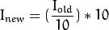

How to scan images, lookup tables and time measurement with OpenCV¶
Goal¶
We’ll seek answers for the following questions:
- How to go through each and every pixel of an image?
- How is OpenCV matrix values stored?
- How to measure the performance of our algorithm?
- What are lookup tables and why use them?
Our test case¶
Let us consider a simple color reduction method. By using the unsigned char C and C++ type for matrix item storing, a channel of pixel may have up to 256 different values. For a three channel image this can allow the formation of way too many colors (16 million to be exact). Working with so many color shades may give a heavy blow to our algorithm performance. However, sometimes it is enough to work with a lot less of them to get the same final result.
In this cases it’s common that we make a color space reduction. This means that we divide the color space current value with a new input value to end up with fewer colors. For instance every value between zero and nine takes the new value zero, every value between ten and nineteen the value ten and so on.
When you divide an uchar (unsigned char - aka values between zero and 255) value with an int value the result will be also char. These values may only be char values. Therefore, any fraction will be rounded down. Taking advantage of this fact the upper operation in the uchar domain may be expressed as:

A simple color space reduction algorithm would consist of just passing through every pixel of an image matrix and applying this formula. It’s worth noting that we do a divide and a multiplication operation. These operations are bloody expensive for a system. If possible it’s worth avoiding them by using cheaper operations such as a few subtractions, addition or in best case a simple assignment. Furthermore, note that we only have a limited number of input values for the upper operation. In case of the uchar system this is 256 to be exact.
Therefore, for larger images it would be wise to calculate all possible values beforehand and during the assignment just make the assignment, by using a lookup table. Lookup tables are simple arrays (having one or more dimensions) that for a given input value variation holds the final output value. Its strength lies that we do not need to make the calculation, we just need to read the result.
Our test case program (and the sample presented here) will do the following: read in a console line argument image (that may be either color or gray scale - console line argument too) and apply the reduction with the given console line argument integer value. In OpenCV, at the moment they are three major ways of going through an image pixel by pixel. To make things a little more interesting will make the scanning for each image using all of these methods, and print out how long it took.
You can download the full source code here or look it up in the samples directory of OpenCV at the cpp tutorial code for the core section. Its basic usage is:
how_to_scan_images imageName.jpg intValueToReduce [G]
The final argument is optional. If given the image will be loaded in gray scale format, otherwise the BGR color way is used. The first thing is to calculate the lookup table.
int divideWith = 0; // convert our input string to number - C++ style
stringstream s;
s << argv[2];
s >> divideWith;
if (!s || !divideWith)
{
cout << "Invalid number entered for dividing. " << endl;
return -1;
}
uchar table[256];
for (int i = 0; i < 256; ++i)
table[i] = (uchar)(divideWith * (i/divideWith));
Here we first use the C++ stringstream class to convert the third command line argument from text to an integer format. Then we use a simple look and the upper formula to calculate the lookup table. No OpenCV specific stuff here.
Another issue is how do we measure time? Well OpenCV offers two simple functions to achieve this getTickCount() and getTickFrequency(). The first returns the number of ticks of your systems CPU from a certain event (like since you booted your system). The second returns how many times your CPU emits a tick during a second. So to measure in seconds the number of time elapsed between two operations is easy as:
double t = (double)getTickCount();
// do something ...
t = ((double)getTickCount() - t)/getTickFrequency();
cout << "Times passed in seconds: " << t << endl;
How the image matrix is stored in the memory?¶
As you could already read in my Mat - The Basic Image Container tutorial the size of the matrix depends of the color system used. More accurately, it depends from the number of channels used. In case of a gray scale image we have something like:
![\newcommand{\tabItG}[1] { \textcolor{black}{#1} \cellcolor[gray]{0.8}}
\begin{tabular} {ccccc}
~ & \multicolumn{1}{c}{Column 0} & \multicolumn{1}{c}{Column 1} & \multicolumn{1}{c}{Column ...} & \multicolumn{1}{c}{Column m}\\
Row 0 & \tabItG{0,0} & \tabItG{0,1} & \tabItG{...} & \tabItG{0, m} \\
Row 1 & \tabItG{1,0} & \tabItG{1,1} & \tabItG{...} & \tabItG{1, m} \\
Row ... & \tabItG{...,0} & \tabItG{...,1} & \tabItG{...} & \tabItG{..., m} \\
Row n & \tabItG{n,0} & \tabItG{n,1} & \tabItG{n,...} & \tabItG{n, m} \\
\end{tabular}](../../../../_images/math/146857cf7bb2f26ce5ef0b4ddff686cf6f945204.png)
For multichannel images the columns contain as many sub columns as the number of channels. For example in case of an BGR color system:
![\newcommand{\tabIt}[1] { \textcolor{yellow}{#1} \cellcolor{blue} & \textcolor{black}{#1} \cellcolor{green} & \textcolor{black}{#1} \cellcolor{red}}
\begin{tabular} {ccccccccccccc}
~ & \multicolumn{3}{c}{Column 0} & \multicolumn{3}{c}{Column 1} & \multicolumn{3}{c}{Column ...} & \multicolumn{3}{c}{Column m}\\
Row 0 & \tabIt{0,0} & \tabIt{0,1} & \tabIt{...} & \tabIt{0, m} \\
Row 1 & \tabIt{1,0} & \tabIt{1,1} & \tabIt{...} & \tabIt{1, m} \\
Row ... & \tabIt{...,0} & \tabIt{...,1} & \tabIt{...} & \tabIt{..., m} \\
Row n & \tabIt{n,0} & \tabIt{n,1} & \tabIt{n,...} & \tabIt{n, m} \\
\end{tabular}](../../../../_images/math/b6df115410caafea291ceb011f19cc4a19ae6c2c.png)
Because in many cases the memory is large enough to store the rows in a successive fashion the rows may follow one after another, creating a single long row. Because everything is in a single place following one after another this may help to speed up the scanning process. We can use the isContinuous() function to ask the matrix if this is the case. Continue on to the next section to find an example.
The efficient way¶
When it comes to performance you cannot beat the classic C style operator[] (pointer) access. Therefore, the most efficient method we can recommend for making the assignment is:
Mat& ScanImageAndReduceC(Mat& I, const uchar* const table)
{
// accept only char type matrices
CV_Assert(I.depth() == CV_8U);
int channels = I.channels();
int nRows = I.rows;
int nCols = I.cols * channels;
if (I.isContinuous())
{
nCols *= nRows;
nRows = 1;
}
int i,j;
uchar* p;
for( i = 0; i < nRows; ++i)
{
p = I.ptr<uchar>(i);
for ( j = 0; j < nCols; ++j)
{
p[j] = table[p[j]];
}
}
return I;
}
Here we basically just acquire a pointer to the start of each row and go through it until it ends. In the special case that the matrix is stored in a continues manner we only need to request the pointer a single time and go all the way to the end. We need to look out for color images: we have three channels so we need to pass through three times more items in each row.
There’s another way of this. The data data member of a Mat object returns the pointer to the first row, first column. If this pointer is null you have no valid input in that object. Checking this is the simplest method to check if your image loading was a success. In case the storage is continues we can use this to go through the whole data pointer. In case of a gray scale image this would look like:
uchar* p = I.data;
for( unsigned int i =0; i < ncol*nrows; ++i)
*p++ = table[*p];
You would get the same result. However, this code is a lot harder to read later on. It gets even harder if you have some more advanced technique there. Moreover, in practice I’ve observed you’ll get the same performance result (as most of the modern compilers will probably make this small optimization trick automatically for you).
The iterator (safe) method¶
In case of the efficient way making sure that you pass through the right amount of uchar fields and to skip the gaps that may occur between the rows was your responsibility. The iterator method is considered a safer way as it takes over these tasks from the user. All you need to do is ask the begin and the end of the image matrix and then just increase the begin iterator until you reach the end. To acquire the value pointed by the iterator use the * operator (add it before it).
Mat& ScanImageAndReduceIterator(Mat& I, const uchar* const table)
{
// accept only char type matrices
CV_Assert(I.depth() == CV_8U);
const int channels = I.channels();
switch(channels)
{
case 1:
{
MatIterator_<uchar> it, end;
for( it = I.begin<uchar>(), end = I.end<uchar>(); it != end; ++it)
*it = table[*it];
break;
}
case 3:
{
MatIterator_<Vec3b> it, end;
for( it = I.begin<Vec3b>(), end = I.end<Vec3b>(); it != end; ++it)
{
(*it)[0] = table[(*it)[0]];
(*it)[1] = table[(*it)[1]];
(*it)[2] = table[(*it)[2]];
}
}
}
return I;
}
In case of color images we have three uchar items per column. This may be considered a short vector of uchar items, that has been baptized in OpenCV with the Vec3b name. To access the n-th sub column we use simple operator[] access. It’s important to remember that OpenCV iterators go through the columns and automatically skip to the next row. Therefore in case of color images if you use a simple uchar iterator you’ll be able to access only the blue channel values.
On-the-fly address calculation with reference returning¶
The final method isn’t recommended for scanning. It was made to acquire or modify somehow random elements in the image. Its basic usage is to specify the row and column number of the item you want to access. During our earlier scanning methods you could already observe that is important through what type we are looking at the image. It’s no different here as you need manually to specify what type to use at the automatic lookup. You can observe this in case of the gray scale images for the following source code (the usage of the + at() function):
Mat& ScanImageAndReduceRandomAccess(Mat& I, const uchar* const table)
{
// accept only char type matrices
CV_Assert(I.depth() == CV_8U);
const int channels = I.channels();
switch(channels)
{
case 1:
{
for( int i = 0; i < I.rows; ++i)
for( int j = 0; j < I.cols; ++j )
I.at<uchar>(i,j) = table[I.at<uchar>(i,j)];
break;
}
case 3:
{
Mat_<Vec3b> _I = I;
for( int i = 0; i < I.rows; ++i)
for( int j = 0; j < I.cols; ++j )
{
_I(i,j)[0] = table[_I(i,j)[0]];
_I(i,j)[1] = table[_I(i,j)[1]];
_I(i,j)[2] = table[_I(i,j)[2]];
}
I = _I;
break;
}
}
return I;
}
The functions takes your input type and coordinates and calculates on the fly the address of the queried item. Then returns a reference to that. This may be a constant when you get the value and non-constant when you set the value. As a safety step in debug mode only* there is performed a check that your input coordinates are valid and does exist. If this isn’t the case you’ll get a nice output message of this on the standard error output stream. Compared to the efficient way in release mode the only difference in using this is that for every element of the image you’ll get a new row pointer for what we use the C operator[] to acquire the column element.
If you need to multiple lookups using this method for an image it may be troublesome and time consuming to enter the type and the at keyword for each of the accesses. To solve this problem OpenCV has a Mat_ data type. It’s the same as Mat with the extra need that at definition you need to specify the data type through what to look at the data matrix, however in return you can use the operator() for fast access of items. To make things even better this is easily convertible from and to the usual Mat data type. A sample usage of this you can see in case of the color images of the upper function. Nevertheless, it’s important to note that the same operation (with the same runtime speed) could have been done with the at() function. It’s just a less to write for the lazy programmer trick.
The Core Function¶
This is a bonus method of achieving lookup table modification in an image. Because in image processing it’s quite common that you want to replace all of a given image value to some other value OpenCV has a function that makes the modification without the need from you to write the scanning of the image. We use the LUT() function of the core module. First we build a Mat type of the lookup table:
Mat lookUpTable(1, 256, CV_8U);
uchar* p = lookUpTable.data;
for( int i = 0; i < 256; ++i)
p[i] = table[i];
Finally call the function (I is our input image and J the output one):
LUT(I, lookUpTable, J);
Performance Difference¶
For the best result compile the program and run it on your own speed. For showing off better the differences I’ve used a quite large (2560 X 1600) image. The performance presented here are for color images. For a more accurate value I’ve averaged the value I got from the call of the function for hundred times.
| Efficient Way | 79.4717 milliseconds |
| Iterator | 83.7201 milliseconds |
| On-The-Fly RA | 93.7878 milliseconds |
| LUT function | 32.5759 milliseconds |
We can conclude a couple of things. If possible, use the already made functions of OpenCV (instead reinventing these). The fastest method turns out to be the LUT function. This is because the OpenCV library is multi-thread enabled via Intel Threaded Building Blocks. However, if you need to write a simple image scan prefer the pointer method. The iterator is a safer bet, however quite slower. Using the on-the-fly reference access method for full image scan is the most costly in debug mode. In the release mode it may beat the iterator approach or not, however it surely sacrifices for this the safety trait of iterators.
Finally, you may watch a sample run of the program on the video posted on our YouTube channel.
Help and Feedback
You did not find what you were looking for?- Ask a question on the Q&A forum.
- If you think something is missing or wrong in the documentation, please file a bug report.

Table Of Contents
Previous topic
Mat - The Basic Image Container